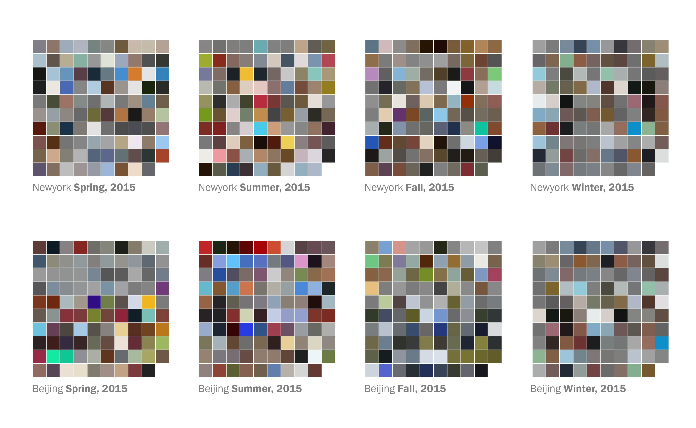
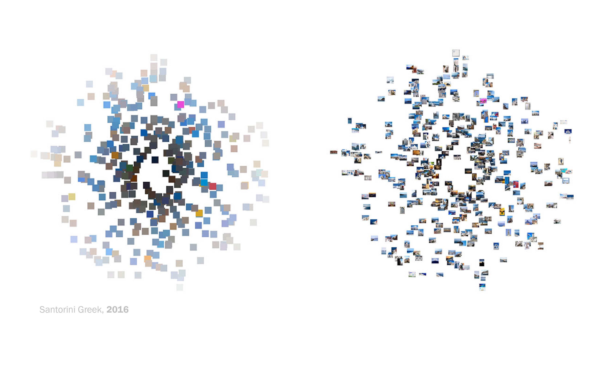
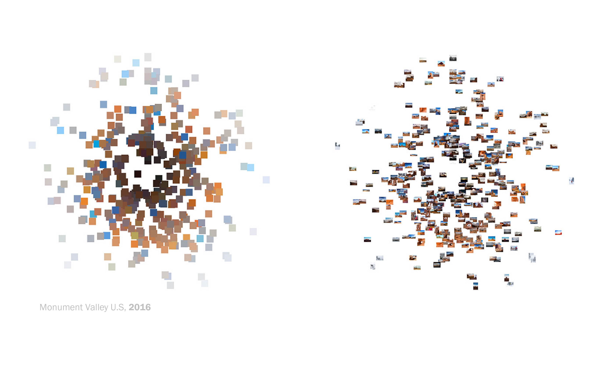
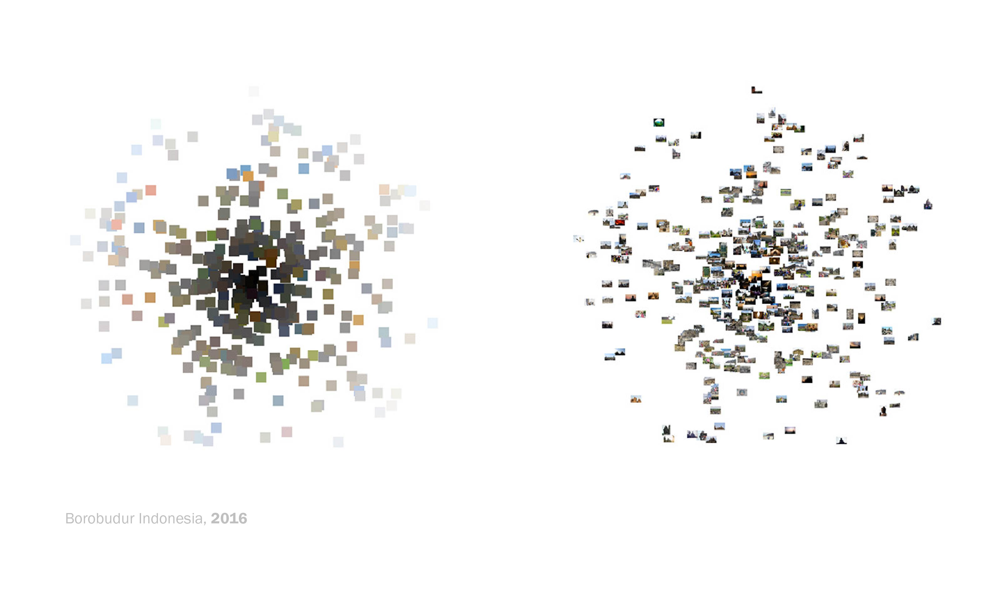
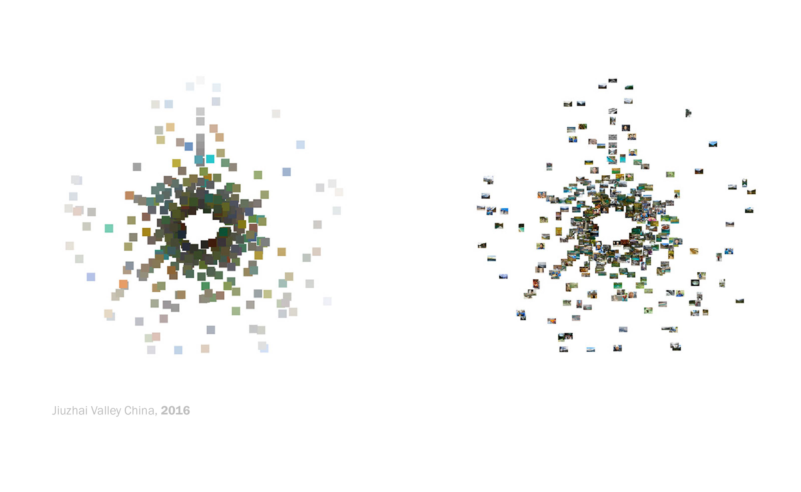

The Color Taxonomy of Cities
03.2016 _ 05.2016 / boston

This visualization extract the color palette from the photos taken in several places around the world. The photo used in this visualization were scraped from Flickr API. (Click here to see the interactive version)




_development tools:
Jquey, Flickr API, Node.js